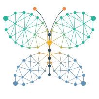

A kinder Kind of AI.
PLAN builds a small business its website, with a team of models named after flowers, led by Daisy. PLAN 2 is a second project: a team that writes software, with models named after insects and led by Butterfly. It runs on the owner’s own machines, so the code never leaves the building and nothing is paid per request.
Butterfly leads a local coding team of insects: Cricket asks, Butterfly plans, the Bees and Ants build, Mantis and Ladybug check. Your code never leaves your building.
THE TEAM
Designed, with its first working parts tested. The team itself is not built yet: its first step is a benchmark of real tasks, which will say honestly where it wins and where it does not.
Butterfly
Butterfly · the lead, in designThe lead
Butterfly turns the approved plan of the work into steps, and decides who does what. Before she plans, Cicada briefs her on what the project already knows; when a fix keeps failing, she steps in, and then Firefly calls for help.
Why the name: the one the team follows.
Cricket
Cricket · in designThe clarifier
Before anything is built, Cricket asks the person the two to five questions that matter: who uses it, what data, what “done” means. The answers become a one-page description of the work with its acceptance tests, and the person approves it before any code is written.
Why the name: the conscience that asks the questions.
Bees
Bees · in designThe builders
The Bees write the pieces of code the plan asks for, several at a time where the plan allows. The author of a piece fixes it when it comes back, and the fix goes through the checks again.
Why the name: worker bees build the comb.
Ants
Ants · in designThe specialists
Tiny models for one narrow job each: a database query from a description, a test from an acceptance rule, finding the line where a fault starts. They are our own small models, built the way PLAN’s are.
Why the name: small, specialised, strong for their size.
Mantis
Mantis · in designThe auditor
Mantis checks every piece the moment it is finished, and sends it back with a reason when it is wrong. She never edits. She comes from a different model family from Butterfly, so the two do not share the same blind spots.
Why the name: still, patient and exact at the gate.
Ladybug
Ladybug · in designThe debugger
Ladybug works just behind the team: she tries each accepted piece in ways nobody planned, and opens a ticket with the evidence when something breaks. Work stays provisional until she has passed it, and a fault in one piece reopens only the pieces that depend on it.
Why the name: ladybugs hunt bugs.
Cicada
Cicada · in designThe librarian
Cicada keeps the project’s memory (decisions, conventions, past fixes) and gives each teammate a short briefing before its turn. Every memory entry points to its source: a change, a file and line, a ticket, the person’s answer.
Why the name: the long memory of the seasons.
Dragonfly
Dragonfly · in designThe search
Dragonfly finds the right decision, document or piece of code by meaning, for Cicada and for the rest of the team.
Why the name: sees in every direction.
Firefly
Firefly · in designThe alarm
Firefly notices when a problem is genuinely new to the team (repeated failures, no similar past work) and calls for help: a larger model or a person. Help from outside is used only if the owner allows it, and only for the parts Firefly flags.
Why the name: the light that calls for help.
How they work together
- Cricket clarifies the request with the person, and the answers become a one-page description of the work with its acceptance tests. The person approves it before any code is written, so a misunderstanding shows up in a page of plain text, not after the build.
- Butterfly plans, after Cicada has briefed her on what the project already knows.
- The Bees and the Ants build the pieces, several at a time where the plan allows.
- Mantis checks every piece as soon as it is finished.
- Ladybug tests the accepted pieces in the background while the team keeps building. Work stays provisional until she has passed it, and a fault in one piece reopens only the pieces that depend on it.
- The author of a piece fixes it, and the fix goes back through Mantis and the tests. After a fixed number of attempts, Butterfly steps in, then Firefly calls for help. No endless circles.
- The person gives the final approval, and every solved problem goes into Cicada’s memory for next time.
The rules the team lives by
- The checkers never edit. Mantis and Ladybug flag problems and never rewrite: a fix nobody checks is the most dangerous change of all, and the author learns from fixing their own work.
- Tests decide, not the models. Every piece is judged by tests it has not seen. A model that gets a task right once is not trusted until the tests say so.
- Mantis is a different model family from Butterfly, so the two do not share the same blind spots.
- The code stays on the premises. Help from outside (a larger cloud model) is used only if the owner allows it, and only for the parts Firefly flags.
- Every memory entry points to its source (a change, a file and line, a ticket, the person’s answer). A summary that cannot be traced is not trusted.
Where it should shine, and where it will not
Should match larger coders, or beat them on cost, speed and privacy:
- well-defined work in a known technology: forms, screens, web routes, database queries and changes, tests, routine rewrites;
- anything that can be checked by running it;
- work inside one company’s own code and habits, which the team learns over time.
Will need a person or a larger model:
- open-ended architecture and unclear requirements, until Cricket has cleared them up;
- deep debugging across a large codebase nobody on the team knows;
- long changes where one early misunderstanding spoils everything after it.
What we have already learned
From the first tests of local models doing real coding work, in October 2026:
- A local model wrote a complete 620-line web service on its own from a written description, and passed every one of about 30 hidden tests, on its second attempt.
- No model is reliable on a single try. The same model scored 11 out of 16 on a task, then 4 on the next attempt. That is why the team makes several attempts and lets the tests choose.
- Asking a model to “fix your code” rarely works; a fresh attempt with the real error message does.
- The description and the tests matter more than the size of the model. That was the founding idea of the team, and the first measurements confirm it.
What it runs on
- The larger roles (Butterfly, the Bees, Mantis, Ladybug) run open-licence models on the owner’s own graphics cards or workstation.
- The Ants are our own small models, built the way PLAN’s are.
- Cricket, Cicada and Dragonfly are small enough to run beside the others.
- No per-request cost, answers in seconds, and nothing leaves the building.
Status
Designed, with its first working parts tested. The next steps, in order:
- The benchmark: 50 to 100 real software tasks from our own work, each with tests, run against a large model for comparison. This decides where the honest line really is.
- The smallest team that works: Butterfly, the Bees and the tools, with the tests and a person answering.
- Then Mantis and Ladybug, then Cricket, Cicada and Dragonfly, each one kept only if the benchmark shows it catches what the others miss.
- Later, training the small roles on the team’s own mistakes, so it gets better at the owner’s own code.